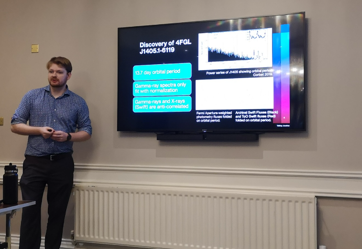
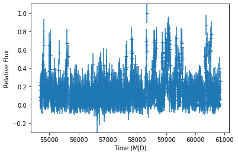

Welcome! I'm an astrophysicist and data scientist focused on high-energy astrophysics. I've been at the George Washington University since 2019 under the advisement of Professor Oleg Kargaltsev and Dr. Robin H.D. Corbet (UMBC). I plan to defend my Ph.D. in early Spring 2026 on my work on High-Energy Observations of Compact Objects and their Interactions with their Environments.
During my doctoral program, I have been studying the exotic neutron stars and black holes to test our theories of physics in extreme environments. When these "compact objects" are observed in binaries with massive stars (many time more massive that our own), we can disentangle the physics generating the most energetic light in the universe.
Check out my first-author publications here
Or check out my ORCID profile which has an updated list of all publications. ORCID Profile

GUI script used to reduce and generate high-quality phase-resolved analysis results
Peak Separation Analysis -- Identifying if the gamma-ray emission sites are changing irrespective of Radio emission sites
Throughout the course of my PhD, I have developed expertise in scripting, data reduction, spatial modeling, time series analysis and leveraging statistical tools to improve results. I've included a few visualations to showcase my skillset here. The first is a relatively simple weighted Fourier transform of noisy data...
Here, I use Fermi-LAT daily binned fluxes (from my own pipeline) of LS 5039, a high-mass gamma-ray binary comprised of a massive stellar companion of roughly 35 solar masses (35 times "larger" or more massive than our solar's system's star) and likely a neutron star (NS). LS 5039 has a relatively short orbital period of ~3.9 days, and with any luck... we should be able to see the orbital modulation in the gamma-rays!
Click “Analyze” to simulate the Fourier analysis.

Email: alexlange@gwu.edu
GitHub: @aplangrangian